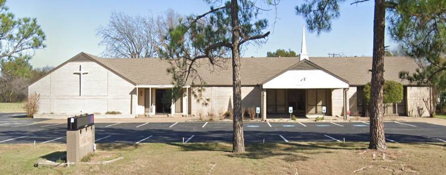
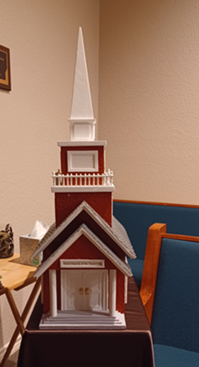
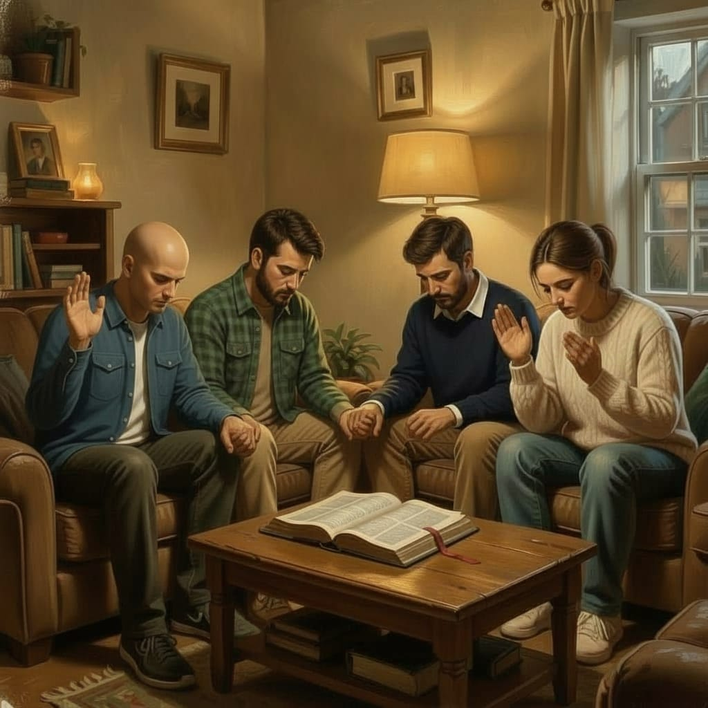

Here's What's Happening At Faith Fellowship Church!

Our Latest Posts!
{#new blog post start just below this#}
{#
#}
{#
#}
{#November 10, 2026#}
{# If a tornado ran through a junk yard, it wouldn't assembly a fighter jet.#}
{#It would just stir the junk around even more. So why would we think that #}
{#random time and chance could assemble anything as simple as a protein (which#}
{#isn't simple), much less an entire animal, or human, or tree?#}
{#
#}
{##}
{# #}
{##}
{#
#}
{#
#}
{#November 9, 2026#}
{# The beauty of the earth! What a marvel! Have you really thought#}
{# about the endless beauty and variety that we see literally #}
{# everywhere we look? Nature, the heavens, the micro-universe! It#}
{# is amazing.#}
{#
#}
{#
#}
{#
#}
{##}
{#
#}
{#
#}
{#November 8, 2026#}
{# I have friends that I know are in need. I am not limitlessly rich,#}
{#so I need to trust God and ask Him to help them, and me. He is limitlessly#}
{#rich!#}
{#
#}
{##}
{# #}
{##}
{#
#}
{#
#}
{#November 7, 2026#}
{# Our God is a strong tower. He is our shield and our reward.#}
{# I have a mind to go through the Bible and pick out every #}
{# single thing that God has been likened to. Maybe it would#}
{# come in the list of the names of God. So someone has already done#}
{# this. I guess I should sit down and meditate on each of those names#}
{# and give God the glory!#}
{#
#}
{#
#}
{#
#}
{##}
{#
#}
{#
#}
{#November 6, 2026#}
{# I love this scripture. If we just wait on Him He will show up.#}
{#He doesn't always come in the time or the manner we expect, but we can#}
{#be sure that He will always come!#}
{#
#}
{##}
{# #}
{##}
{#
#}
{#
#}
{#November 5, 2026#}
{# I just heard the late Michael Heiser talk about how when God called#}
{# Solomon His Beloved - Jedidiah - He was not giving him a new name. He#}
{# was saying that this is the one who should sit on the throne. So when#}
{# Jesus came out of the water after His baptism and God called Him "His Beloved Son"#}
{# He wasn't just being sentimental. He was saying, "This is the one who will#}
{# take the throne." Isn't that fascinating?!#}
{#
#}
{#
#}
{#
#}
{##}
{#
#}
{#
#}
{#November 4, 2026#}
{# No matter how we fail God, He continues being faithful. This is something#}
{#He points out in the Bible, too. While we are fickle and faithless, He remains#}
{#faithful. We can always count on Him! Praise God!#}
{#
#}
{##}
{# #}
{##}
{#
#}
{#
#}
{#November 3, 2026#}
{# As I get older I look back and have so many regrets. I know that#}
{# I can't wallow in them. So instead, I am going to ask God to forgive#}
{# me for all my past sins and errors, and I am going to keep my eyes#}
{# on Jesus and try to be as much like Him every day as I can for the#}
{# time I have left.#}
{#
#}
{#
#}
{#
#}
November 2, 2026
I was reflecting on God's goodness. Do we realize that God's
goodness extends to our problems? He allows problems in our lives
so that we can grow and become more like Jesus!
November 1, 2026
It is sad to see old farm houses sitting empty and falling apart.
An era that once was is gone. I guess we have to move forward with
the new, because if we don't it is going to move forward without us.
October 31, 2026
God's beauty sometimes just takes my breath away!
October 30, 2026
God could have made the world black and white and we would
never have known. But I am so glad He gave us glorious color!
October 29, 2026
These trees are absolutely spectacular when they are covered in
ice and snow. Having said that, though, I would rather not see
one in person this year! #warmwinter #southernheat
October 28, 2026
I am sure I have said it before, but God creates flowers
on the hillsides even when there is no one around, on the off
chance that someone will wander up there and see it. He could
just leave the hillsides bare. But He doesn't!
October 27, 2026
It is so cool to see the wind actually pick up the water
and blow it. I saw a video of a waterfall and the wind was
so strong that the waterfall only fell about halfway and then the wind
just blew it all around!
October 26, 2026
Every morning when I go out to feed my hens I find one of them
out, and trying to figure out how to get back in. I have to go after
her with the net and put her back in, and the next morning she is
out again! I have to figure out how she is getting out!
October 25, 2026
God is so generous! Have you considered just how generous
God is? He provides rain even when we don't need it. He
provides sun all the time, whether we deserve it or not.
He provides air even when we are actively disobeying Him!
What a great and generous God!
October 24, 2026
While we were in Durango we saw some of the most beautiful rainbows!
And you know how much I like rainbows!
October 23, 2026
Jesus is Lord! I can't wait until that day when I step
into His presence. I pray that He finds me worthy. Not
because of anything I have done, but because I clung to
Him with all my might! His righteousness in me.
October 22, 2026
We are actively looking for another bottle calf to raise. We typically raise
one cow a year or so. But this year we are resting the pasture. So
starting in January we would like to find a bottle calf to raise!
October 21, 2026
Jesus sits on the throne in all cases. Even if there is
another king, Jesus is still the King of Kings! Lord of Lords!
October 20, 2026
Today I am reminded of the price that Jesus paid for me. For me.
Why would anyone do that for someone so not worthy? It is only
because of His great love for us!
October 19, 2026
Just one more rainbow picture! This is one of the ones we took on our trip! We
were on the train to Silverton and it was raining but we caught this
rainbow out the window!
October 18, 2026
It is comforting knowing that our Lord and Savior is also
The Great Shepherd. How wonderful to have God Himself watching
Over His flock!
October 17, 2026
One day all the earth will acknowledge that God is the Sovereign Lord and Jesus is Lord of All!
October 16, 2026
The seasons are definitely changing. It was so hot this summer, but
Now you can really tell that Fall is in the air!
October 15, 2026
Church buildings are what they are. Some are pretty and some are not so pretty. Who cares?!
The Church inside is made up of such
a variety of people! But they are all God's people, amen? Amen!
October 14, 2026
Did you put on your armor this morning? A good quiet time
Every morning for prayer, Bible reading and meditation is essential
To a strong Christian walk.
October 13, 2026
I have never seen one of these in action, but having goats I can see
Why it would be helpful. Sometimes you just can’t catch them! But you can
Grab them with that hook because they don’t see it coming!
October 12, 2026
I thought this was pretty. I know that the cross was a terrible
Instrument, but what it represents to us is priceless!
October 11, 2026
It makes me happy to know that if I am lost, Jesus won’t give up
On me. He will keep searching until He finds me again!
October 10, 2026
I just can’t help myself. I love the colors of rainbows!
October 9, 2026
This was from a sermon. I was doing a series on “Who is” and this was
One of them, talking about Jesus! Have you heard of him?
October 8, 2026
A great army is always there when you need them. But God is always
There, even when the army fails. Because God never fails!
October 7, 2026
I see pictures like this one and I get very wistful and depressed. But at the
same time there is something attractive about it. It's hard to pin down
all the emotions it evokes.
October 6, 2026
This was not the greatest AI picture, but I have been reflecting on
the Via Dolarosa, where Jesus had to carry the crossbeam of the
Cross to His own crucifixion. He did that for us. Wow!
October 5, 2026
I'm sorry, but I just love color! I asked AI to create me a pic, and this is
what it came up with. It's interesting. But I do love the color! You know,
God could have made the world black and white and we wouldn't have known
the difference. But I'm so glad He didn't!
October 4, 2026
I thought this was an interesting picture. I gave AI some
basic instructions and this is what it came up with. Have
you used AI for anything?
October 3, 2026
There is something so forlorn about a tree in the middle of nowhere
covered in snow. And yet it is so beautiful! God has given us
such a beautiful and interesting creation!
October 2, 2026
Did you know that hot and steamy showers were not a thing
in just about every home around 50 years ago? I don't know
about you, but there's nothing like a hot shower after a
hard day's work!

October 1, 2026
We did our Alabaster offering this past Sunday. All the money
goes to building schools and hospitals in countries where these
facilities are needed but can't be afforded. What a great thing
to give money for!
September 30, 2026
My young hens have begun to lay eggs! I am getting about four eggs
per day right now, but looking forward to getting a dozen or more
a day. We eat a lot of eggs!
September 29, 2026
We took a trip to Glen Rose Texas several years ago and I think
we should take another one. All kis need to see the dinosaur
footprints. It is the coolest thing!
September 28, 2026
I get more and more excited as I hear the news of all the
archeological finds that have been uncovered in the last few
years. And the Durupinar site is the biggest of them all!
September 27, 2026
I don't know if you've been watching the news, but they are
really excavating at the Duripinar site in Turkey. Noah's Ark?
Possibly!
September 26, 2026
Summer is coming to an end, but here in Texas we will (hopefully)
have a glorious warm Fall with lots of family, friends, and of course
BBQ!
September 25, 2026
I am so glad that God gave us color! I just love lots and lots of bright
colors. I also love pastels, but sometimes you just need a burst of
glorious colors! Thank You, Lord!
September 24, 2026
But we have this treasure in jars of clay to show that this
all-surpassing power is from God and not from us. ~ 2 Corinthians 4:7
September 23, 2026
I love early mornings, just before sunrise. It is so quiet and peaceful. It
is the best time for being with the Lord. The day has not yet started and
it is easy to sit and focus on God, listening, praying, reading, meditating.
Just waiting on the Lord before the rush and bustle of the day.
September 22, 2026
Did you have a pet growing up? We had a dog named Nugget - half collie,
half german shepherd. The sweetest dog! I remember hearing about the
day he died. I was heartbroken. We never forget our first pets!
September 21, 2026
It has occurred to me that I would not appreciate the sunny days as much
if there weren't any cloudy days. So thank You, Lord, for the cloudy days
that make me appreciate the sunny ones!
September 20, 2026
How lovely on the mountain are the feet of them who bring good news,
proclaiming peace, announcing news of happiness. Our God Reigns! Isaiah 52:7
September 19, 2026
People are more connected than ever, and yet they are
lonelier than ever. We need to be with people, physically.
And we need to interact with people physically.
God made us for real relationships.
September 18, 2026
Jesus is Lord, yesterday, today and forever Is He Lord of your life?
September 17, 2026
Do you paint? I have always wanted to be artistic in this way,
but the talent just isn't there. Anyway, I am musical, and
I create in other ways. How about you?
September 16, 2026
We have been nearly two months without rain and the ground
is so dry. Lord, we could really use some rain about
now. Thank you!
September 15, 2026
We live on a stunningly beautiful planet. But I can't wait
to see the New Heavens and the New Earth!
September 14, 2026
There have been a couple of notable eclipses in the last few years.
I remember one big eclipse when I was a kid. My brother was working
up some tin foil contraption to be able to view it. This was long
before cell phones and Internet. I didn't understand what he wa doing
or why it was such a big deal. I do now!
September 13, 2026
These wispy clouds are very high up in the sky,
just doing their thing with no one bothering them.
They have full faith in themselves because they are being
what God made them. We, too, should trust that we are
being what God made us.
September 12, 2026
When the storm clouds come it is too late to start changing your
life. If there are things you should change, then you should start now.
That way you are ready when hhose storm clouds come.
September 11, 2026
Do you have a favorite place to pray?
I have a special chair. Some people have a closet.
Some people have something different every day. That's perfectly fine!
The goal is to take time to pray every morning and spend time
with your Lord and Savior. He wants to spend time with you!
September 10, 2026
We have a lot of Mockingbirds around here,
and they can sing thirty or more different songs.
It makes me think of Jesus. Do I sing His songs?
September 9, 2026
I just love baby goats! We hope to have a few
in the next year. They are so much fun I could
just watch them all day!
September 8, 2026
Sometimes we get ahead of ourselves and shoot ourselves down.
Life is coming at us so fast it feels like there is no time to think.
But we must slow down and make time for the things that really matter.
Faith and Family.
September 7, 2026
Are you celebrating Labor Day? We have decided to cook something
special for the family and enjoy their company!
September 6, 2026
Are you finding yourself in a storm of life right now?
Jesus is our Rock. The world can swirl around us
with everything in an uproar. But Jesus is the solid
Rock on which we stand. Steadfast, immovable.
September 5, 2026
The beauty of this world simply astonishes me. But when I realize
that the new heavens and the new earth will be a million times better
I am simply speechless.
September 4, 2026
One of my favorite Psalms is Psalm 139, because
it talks about how God knit us in our mother's
womb. It is such a great visual!
September 3, 2026
Many people have not thought much about it, but the water
creatures were not subject to the flood of Noah, though clearly
many died. But God was wiping out all "who had the breath of life" in them.
Because the flood was water, many sea creatures were just fine. And Noah
did not take any fish on the Ark that we know of!
September 2, 2026
I spend most of my day oblivious to the beauty around
me simply because I am busy focusing on other things.
But every once in a while I am stopped in my tracks
by the beauty that God has given me. Then I pause and
thank Him and enjoy what He is showing me. I think it's
His way of letting me know that although my mind was
somewhere else, His wasn't.
September 1, 2026
Here we are in September already. It is the perfect time to
take a vacation (if you don't have kids in school) and relax before
all the "seasons" begin. (Fall, Thanksgiving, Christmas). It can seem
like a crazy time, so take a break now and catch your breath.
August 31, 2026
Just a picture of a beautiful refreshing waterfall today. We
have been thirty days without rain and in the 100's of degrees.
It's been hot. So this picture looks especially inviting!
August 30, 2026
I know I just mentioned God's supply a couple of days ago, but
I wanted to say a little bit more. Do we trust Him? Do we trust
Him even when He doesn't seem to hear us or come through for us
as we expect? Do we believe He has our best in mind? If the answer
is yes, then we must simply accept from His hand what He gives, or
accept that He is not going to give. He has a reason that we simply
can't know. He is God and we are not.
August 29, 2026
As a Christian, we are not shielded from sorrows. But
at the same time we always have God, who understands
more deeply than we can know. So even within the times
of sorrow we have peace and joy.
August 28, 2026
Birds don't worry about their next meal. We should not
either. Trust God. He promises to supply. It might not always
look like what we expect. But He always supplies.
August 27, 2026
There is such beauty in the world. Everywhere we look
we see beauty. God didn't have to make it that way and
we would never have known. But He is generous.
August 26, 2026
Rage is something we are seeing more and more.
People no longer know how to control their
emotions. Rage occurs when people simply
don't get their way and they think they
should. But the truth is that life is not fair.
We all often don't get our way. It is part of
being an adult to control our emotions.
August 25, 2026
Jealousy is a terrible thief of joy and peace. If you find
yourself becoming jealous of someone, ask yourself why,
and then truly consider the situation. Is it worth
losing your joy over? Is it worth possibly losing a
friend over? It is best to examine those feelings and
then find a way to let them go.
August 24, 2026
Do you know someone struggling with sadness or depression?
Maybe it can help if they know that the situation they
are currently in will not last. Everything changes, except
God and His goodness.
August 23, 2026
The word "joy" conjures up images of people who are
just giddy with happiness. But I think there is a
deeper meaning. It is an inner peace and happiness
even in the midst of outward storms. Life can be
a chaotic mess (and sometimes it just is), but that
doesn't have to translate to a chaotic life.
When we are abiding in Christ, no matter what is going
on we can have the joy of the Lord.
August 22, 2026
It takes a strong will to be self-controlled. It is easy
to have self control when everything is going well, but
to have it in the midst of storms? Well, that's something
we all admire. So let's strive to have it for ourselves.
August 21, 2026
Do you think you're a patient person? Some people are
more naturally patient, but some of us have to work
at it. But it is a fruit of the Spirit, so it's worth
working towards.
August 20, 2026
The fruits of the Spirit should come naturally if we are abiding
with Christ. If we are struggling to produce the fruits,
then we need to check which tree we are currently
grafted to. We are to abide in the vine that is Jesus. Only
then will the fruit naturally be produced to bless others.
August 19, 2026
Do you find peace in prayer? Or do you find prayer difficult?
It is just talking to God. He is a real person. Even though
He doesn't speak back out loud, don't ever think that
He is not speaking. He speaks to us through Scripture. So
when you pray, have your Bible open. Read and memorize, and
develop all of that into a peaceful, joyful habit.
August 18, 2026
What does this remind you of? If you are older like I am,
It brings back memories of what seemed like a
simpler time. It may not have been simpler, but
it sure seems like it.
August 17, 2026
My church building is located in a little town. It's little
but booming and there are so many projects that it
makes my head spin. This little town won't be little
for much longer!
August 16, 2026
I had a discussion with a Muslim a few days ago, and he
simply can't wrap his head around the Trinity. He
tells me that Allah is very simple, a singular God
all alone in the heavens.
I have tried to explain to him that the God of the
Bible is much more complex than that. A God I can
wrap my head around is too small. But the God of the
Bible is triune - three persons in one being. He is
community in unity.
Think about this. How can a singular God, all alone
in the cosmos, be love? Who is there to love unless
He creates something to love? But the God of the
Bible was love before He created anything - because
He is community within Himself. He loves completely,
apart from His creation. But this is how we know
He can love His creation.
August 15, 2026
Memorizing Scripture is not hard, it just takes concentration
and effort. But the more we hide God's word in our hearts
the more the Holy Spirit can speak to us.
August 14, 2026
Do you have young children? How do you talk to them
about God and Jesus? When my kids were young
I just spoke as if it was natural to talk to
and about God and Jesus all day long. And so
it became natural for them as well.
August 13, 2026
The concept of salvation by grace alone is a difficult concept, becuase
nothing is ever free. But in this case, someone else paid
for it. Here is what I mean:
God is perfect and holy. No matter how hard we try, we can
never be perfect and holy. So God Himself paid the price
to cleanse us and make us perfect and holy, if we want it.
Why would He do that? Because He loves us and He wants to
share our lives with us.

August 12, 2026
Do you have someone you're praying for? Hang in there and
keep praying for them. You never know what events
will transpire in their lives that will cause them
to begin to question. And that's when they are ready
to pay attention to the leading of the Holy Spirit.
August 11, 2026
While not my favorite, there is one proverb that always stands
out to me, and that is Proverbs 19:11, which says, "A man’s
insight gives him patience, and his virtue is to overlook an offense.
This is great advice, but very hard to follow. Our pride often
gets in the way. But I keep it before me so that I am reminded
that Jesus never let His pride get in the way of saving me.
August 10, 2026
My favorite verses seem to change depending on my mood, my situation
and things the Lord speaks to me about. This week I am really
loving Psalm 16, especially the part where it says He has shown
to me the paths of life and in His presence is fullness of joy,
at His right hand are pleasures forevermore.
August 9, 2026
Why are there so many different denominations of Christians?
The answer is simple. Human frailty. We misunderstand
Scripture, or we misinterpret Scripture, or we simply
twist Scripture. Or, we have our own opinions about
things such as style of worship, the color of the walls
and so on. Because humans are frail and not all knowing,
we tend to split into various denominations as we have
read and interpreted Scripture.
Not all denominations are bad. Some splits come down to
belief about the Holy Spirit, or about music,. Those things
are not salvation issues, and they are not as important
as splits over doctrine.
Now, some splits happen because a denomination has compromised
the Word of God for its own reasons. When that happens, a new
denomination might spring up. Hopefully, one that is resting
on the pure doctrines of Scripture.
August 8, 2026
Maybe I'm crazy, but I find reading the Bible comforting as well as
inspiring, educational, growth-promoting, and so on. Here is
what I mean. I read my Bible to meet God. I am reading about
all the things He did, is doing, and will do. I get to know
Him better. I get to understand Him better. That can't
happen if people don't open their Bibles.
August 7, 2026
Do you know of any helpful apps? I would love to hear about them. I
really love the Bible Hub app, and also YouVersion. I also
find Bing Translator handy. I know there are thousands of
apps out there. Which ones do you use the most?
August 6, 2026
I listened to a fascinating podcast about the ancient Sumerian writings
and the book of Enoch. Both confirm that there were once giants
roaming the land. But apparently, at least in the case of the
ancient Sumerian writing, the scientific community wouldn't
touch it with a ten foot pole. So the data is pretty obscure.
However, it is out there for anyone that wants to look.
August 5, 2026
Have you ever heard a message that was life-changing? I've heard many, but
the one that stands out was given by John Maxwell. Excellent speaker,
excellent message, and it changed how I thought about evangelism.
August 4, 2026
The tenet of faith involving entire sanctification is often
misunderstood. It doesn't mean you are now so clean that
you are perfect and you will never sin again. It means
that you have chosen to try and be so close to the Lord
that you simply don't want to sin anymore. Can you? Yes,
you can. But you discover that you don't have to, and you
don't want to.
August 3, 2026
Did I mention how much I love my church family?!
August 2, 2026
Proverbs 3:27 has had a big impact on my life as well. Every time my
pride wants me to withhold something from someone, these
words ring in my ear. Bravo conscience! You win.S
August 1, 2026
An author that has had a big impact on my Christian development
is A.W. Tozer. Especially his book "The Knowledge of the Holy."
I think every Christian should read this book at least once.